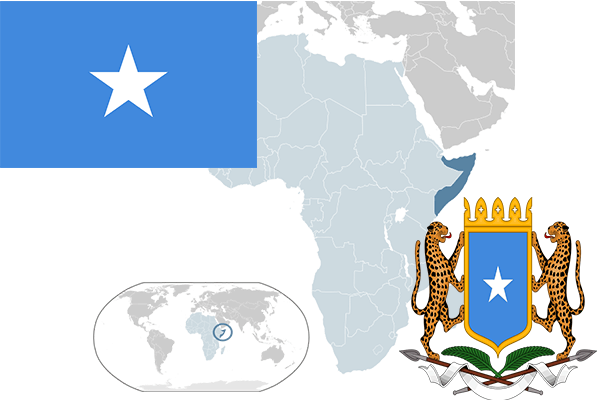

To`liq nomi: Somali Demokratik Respublikasi
Region: Shimoliy-Sharqiy Afrika
Qonunchilik shakli: Respublika
Mustaqillik kuni: 26 iyun 1960-yil
Poytaxt: Mogadisho
Maydoni: 637,657 km²
Chegaradosh davlatlari: Efiopiya, Keniya.
Aholisi: 14,317,996 (2016-yil)
Aholi zichligi: 19.31/km2
Aholining o`rtacha yoshi: 55,69 yil
Rasmiy tili: Somali tili, Arab tili.
Dini: Islom
Pul birligi: Somali Shilling
Telefon prefiksi: +252
Internet domen: .so
Xalqaro tashkilotlarga a`zoligi: BMT
Dengiz va okeanlarga chiqishi: Hind okeani
YIM: Butun: $5.8 mlrd (2016-yil) Jon boshiga: $300
Yirik shaharlari: Mogadisho, Hargeiza, Bosaso, Galkayo